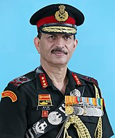
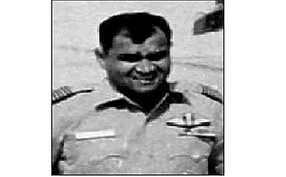

Vir Chakra
Vir Chakra is an Indian wartime military bravery award presented for acts of conspicuous gallantry in the presence of the enemy on the battlefield and is third in precedence in wartime gallantry awards and comes after the Param Vir Chakra and Maha Vir Chakra.
1-
Tirath Singh Oberoi
Major

2-
Harbaksh Singh
Brigadier

3-
Krishan Kant Saini
Wg Cdr
